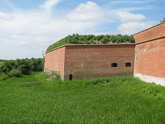
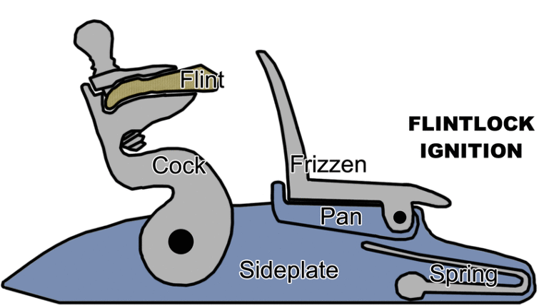

나폴레옹 시대 영국 전함의 전투 광경 - Lieutenant Hornblower 중에서 (16)
게시: 2019-05-27T06:30:51+09:00
이제 드디어, 바로 앞 요새 너머의 하늘이 약간 더 희미하게 보이는 것 같았다. 어쩌면 구름 위로 달이 올라온 것일까 ? 그 쪽 부분을 제외한 나머지 하늘은 보라색 벨벳 같았고, 아직 별들이 여기저기 흩뿌려져 빛나고 있었다. 하지만 분명히 전에는 보이지 않던 희미한 빛이 하늘에 있었다. 부시는 몸을 뒤척이며 벨트에 불편하게 끼워져 있는 권총들을 더듬어 보았다. 그것들은 모두 공이치기가 반만 당겨진 안전 위치 (at half cock, PS1 참조) 상태였다. 그는 나중에 공이치기를 완전히 뒤로 당겨놓아야 한다는 것을 기억해야 했다. 수평선을 보니 보라색 하늘에 무언가 붉그스름한 색이 살짝 비치는 것 같았다. "부대에게 명령을 전달하라." 부시가 말했다. "공격 준비." 그는 명령이 대오를 따라 전달되기를 기다렸지만, 줄의 끝 부분까지 명령이 전달되는데 필요한 시간이 다 흐르기도 전에 도랑 안의 수병들 사이에서는 소음과 북적거림이 생겨났다. 어느 집단에나 있기 마련인 빌어먹을 바보들이, 명령이 전달되자마자 일어서기 시작한 것이었다. 아마 그 바보들은 그 명령을 다음 사람에게 전달하지도 않았을 것이었다. 하지만 이런 사례는 최소한 전염성이 있었다. 대오를 따라 누워있던 수병들은 양 날개쪽으로부터 시작해서 부시가 있는 중앙 쪽으로 되돌아오는 이중의 물결과 같은 모습으로 주섬주섬 일어났다. 부시도 자리에서 일어났다. 그는 군도를 뽑아들고 손에 균형을 맞추어 본 뒤 손에 꼭 맞는 위치로 칼자루를 움켜쥐고는 왼손으로 권총을 하나 뽑아들고 공이치기를 완전히 뒤로 젖혔다. 오른쪽 너머에서는 갑자기 금속성의 철커덕 소리들이 났다. 해병들이 총검을 끼우고 있는 것이었다. 부시가 보니 이젠 좌우 사람들의 얼굴 모습을 알아볼 수 있을 정도가 되었다. "전진 !" 그가 이렇게 말하자 수병들의 대오가 도랑으로부터 우르르 쏟아져 나왔다. "침착하게, 거기 !" 그는 마지막 말을 거의 소리지르다시피 했다. 조만간 이 대오 중 성급한 놈들은 달리기 시작할 것이지만, 그게 더 늦게 시작될 수록 더 나았다. 그는 수병들이 숨을 헐떡거리며 제각각 따로 도착하는 것이 아니라, 하나의 파도를 유지한 채 요새에 도달하기를 원했다. 저 왼쪽에서 혼블로워가 역시 "침착하게"를 외치는 소리가 들렸다. 이 전진의 소음이 지금쯤은 요새에서도 들렸을 것이고, 경계를 풀고 있는 졸린 스페인 보초병들이라고 해도 알아차릴 수 밖에 없을 것이었다. 곧 보초가 당직 부사관을 부를 것이고, 그 부사관이 달려와 눈으로 본 뒤 약간 머뭇거리다가 경보를 울릴 것이었다. 요새는 이제 막 붉게 물들고 있는 하늘을 배경으로 시커먼 사각형의 모습으로 부시의 눈 앞에 우뚝 서있었다. 그는 점점 빨라지는 자신의 걸음을 자제할 수가 없었다. 수병들의 대오도 그를 따라 서둘러 따라왔다. 그러더니 누군가가 함성을 질렀고, 곧 다른 성미 급한 놈들이 함성을 따라 질렀다. 전체 대오가 뛰기 시작했고, 부시도 그들을 따라 뛰었다. 마치 마법처럼, 그들은 곧 석회암을 거의 수직으로 잘라 파놓은 6피트(약 1.8m) 깊이의 해자 언저리에 도착했다. "가자 !" 부시가 외쳤다. 양손에 군도와 권총을 각각 든 상태였지만, 그는 등을 요새 쪽으로 돌린 채 팔꿈치를 해자 언저리에 걸고 매달린 뒤 해자 바닥으로 뛰어내려 급경사면을 내려갈 수 있었다. 해자 바닥에는 물이 채워져 있지는 않았지만 미끄럽고 울퉁불퉁한 상태였다. 그러나 그는 망설이지 않고 반대편 해자 벽면으로 뛰어갔다. 고함을 외쳐대는 수병들도 그 반대 벽면에 달라붙었다. "날 밀어 올려라 !" 부시는 양 옆의 수병들에게 외쳤다. 그들은 부시의 두 넓적 다리에 각각 어깨를 댄 뒤 거의 던지다시피 그를 올렸다. 그는 요새 벽면과 해자 사이의 좁은 대지에 얼굴을 대고 엎드린 채로 기어올라갔다. 몇 야드(약 0.9m) 옆에서 어떤 수병이 벌써 쇠갈퀴가 달린 밧줄을 요새벽 위로 던지려 하고 있었다. 쇠갈퀴는 우당탕 소리를 내며 도로 떨어졌는데, 부시 바로 옆 1야드도 안되는 거리에 떨어졌다. 하지만 그 수병은 부시에게는 눈길도 주지 않고 다시 쇠갈퀴를 휙 낚아챈 뒤 자세를 가다듬고 다시 요새벽 위로 던졌다. 이번에는 쇠갈퀴가 제대로 걸렸다. 그 수병은 발을 벽에 대고 밧줄을 움켜쥐더니 미친 사람처럼 벽을 기어올랐다. 그 수병이 절반 정도 올라가기도 전에, 다른 수병이 나타나 그 밧줄을 잡고 올라가기 시작했다. 그러더니 흥분하여 소리를 고래고래 지르는 다른 수병들도 우르르 몰려들어 다음 순서를 다투었다. 성벽 저쪽 좀 떨어진 곳에서도 쇠갈퀴가 제대로 걸려 또 한무리의 수병들이 소리를 질러대며 밧줄 주변에 몰려들었다. 그러더니 머스켓 소총의 사격이 시작되었다. 꽤 많은 수의 총성이 울렸다. 여태까지 맡던 상쾌한 밤 공기와는 날카롭게 대조되는 화약 연기가 부시의 콧구멍 속으로 들어왔다. 그의 오른쪽 편에 있는 성벽의 다른쪽 면에서는 해병들이 요새벽에 뚫린 포안(embrasure : 대포를 쏘기 위해 뚫어놓은 구멍)을 통해 요새 안으로 침투하려고 애쓰고 있을 것이었다. 부시는 돌파구가 있을까 하고 그의 왼쪽을 돌아 보았다. 돌아보길 정말 잘 했다 싶었다. 요새 출입을 위해 옹벽 구석에 만들어둔 쪽문(sally point)이 있었던 것이다. 이 쪽문은 무쇠로 테를 두른 넓은 목재 문으로서, 요새 모서리 부분에 돌출되어 만들어진 보루(projecting bastion)로 가려진 부분 안쪽에 가려져 있었다. 수병들 중 멍청이 두 명이 이 쪽문에는 신경조차 쓰지 않고, 위쪽에서 고개를 내밀기 시작한 스페인군에게 머스켓 소총을 쏘아대고 있었다. 원래 평균적인 수준의 수병에게는 머스켓 소총을 쥐여줘서는 안 되었다. 부시는 이 소란 속에서도 잘 들리도록 목소리를 높여 외쳤다.

(보루와 거기 옆면에 뚫린 sally point 입니다.)
"도끼 든 수병은 이쪽으로 ! 도끼 ! 도끼 !" 해자 속에는 아직 기어올라오지 못한 수병들이 많이 있었다. 그들 중 하나가 도끼를 휘두르며 사람들 속을 뚫고 나와 해자 벽면을 기어오리기 시작했다. 하지만 부시의 공격조에서 분대를 맡고 있고 또 힘이 세기로 유명한 갑판장 조수인 실크가 해자 위의 좁은 공간 저쪽에서 달려오더니 도끼를 아래에서 건네 받았다. 그는 엄청난 힘과 끈기로 온몸을 실어가며 도끼를 힘껏 휘둘러 쪽문을 쪼개기 시작했다. 도끼를 든 수병 하나가 더 도착하더니 팔꿈치로 부시를 밀어내고는 문짝에 도끼질을 시작했지만, 그 친구는 실크만큼 기술이 좋지도 않고 힘이 세지도 않았다. 그들이 힘껏 내리치는 도끼질 소리는 보루 벽과 요새 성벽 사이의 좁은 공간에서 크게 울렸다. 무쇠를 덧댄 문짝이 열리더니 빗장 너머로 강철의 번뜩임이 눈에 들어왔다. 부시는 권총을 겨누고 방아쇠를 당겼다. 실크의 도끼가 문짝을 완전히 꿰뚫고 지나갔고, 그는 도끼날을 비틀어 빼냈다. 그러더니 그는 조준을 바꾸어 도끼를 문짝 중간을 향해 수평으로 휘둘렀다. 그는 세 번 힘껏 도끼를 휘둘렀다가 멈추고는 도끼를 든 다른 수병에게 어디를 내리치라고 지시를 했다. 실크는 다시 도끼질을 시작했다. 그러더니 그는 도끼를 내려놓고 그가 뚫어놓은 문짝의 삐죽삐죽한 구멍에 손을, 문짝에는 발을 대고는 무지막지한 힘을 발휘해 문짝의 한쪽 부분 전체를 뜯어내버렸다. 그렇게 뜯겨나간 부분 너머에는 빗장이 보였다. 실크의 도끼가 그 위에 반복해서 내리꽂히더니 결국 빗장을 부러뜨렸다. 실크는 쉰 목소리로 고함을 지르며 도끼를 손에 든 채 그 삐죽삐죽한 구멍을 통해 뛰어들어갔다. "뒤를 따르라, 제군들 !" 부시가 고래고래 소리를 지르며 그를 따라 뛰어들어갔다. 들어온 부분은 요새의 탁 트인 마당이었다. 부시는 죽어 넘어진 사람에게 걸려 넘어졌는데, 고개를 들어 쳐다보니 한무리의 사내들이 보였다. 그들은 잠옷(shirts) 차림이거나 아예 벌거벗고 있은 상태로서, 제멋대로 자란 턱수염을 길게 기른 커피색 얼굴들을 하고 있었고 손에는 해전용 군도(cutlass)와 권총 등을 들고 있었다. 실크가 도끼를 휘두르며 미친 사람처럼 그들에게 덤벼들었다. 스페인군 하나가 그 도끼에 맞아 쓰러졌다. 그 스페인 병사가 별 소용도 없이 손을 올려 그 도끼를 막다가 잘린 손가락이 땅에 떨어지는 것이 부시의 눈에 보였다. 부시도 앞으로 달려나가는 동안 권총들이 발사되며 총성이 울렸고 화약 연기가 물결처럼 퍼졌다. 그의 뒤에는 따라오는 수병들이 잔뜩 있었다. 부시의 군도가 스페인군의 칼에 부딪힌 다음 순간 스페인 병사들이 뒤돌아 도망치기 시작했다. 부시는 눈 앞에서 달아나는 벌거벗은 어깨에 칼을 내리 꽂았고 비명과 함께 그 살에 뻘건 상처가 그어지는 것을 보았다. 그가 쫓던 스페인 병사는 망령처럼 어디론가 사라져 버렸다. 부시는 다른 적을 찾아 뛰다가, 군모도 잃고 머리카락이 헝클어진 채 불똥이 튀는 듯한 눈빛으로 귀신처럼 고함을 질러대는 레드 코트 차람의 해병과 마주쳤다. 부시는 그 해병이 자신을 향해 총검을 찔러대는 바람에 그걸 칼로 젖혀내야 했다. "침착해라, 이 멍청아 !" 부시가 외쳤다. 그는 이 말을 내뱉고 나서야 자신이 있는 힘껏 소리를 질렀다는 것을 깨달았다. 해병의 그 미친 듯한 눈빛 속에 자신을 알아보는 듯 하는 표정이 서리더니 총검을 들고 다른 쪽으로 총검을 돌리고는 뛰어가버렸다. 저 뒤쪽에는 다른 해병들도 있었다. 성벽의 포안을 통해 요새 안으로 침입해들어온 것이 틀림없었다. 그들은 모두 싸움의 광기에 취해 고함을 질러대고 있었다. 이쪽으로도 새롭게 우르르 수병들이 쏟아져 들어왔다. 쇠갈퀴가 달린 밧줄로 성벽을 넘어온 패거리들이 성벽 아래로 내려오고 있는 것이었다. 마당 저쪽을 보니 나무로 만들어진 건물들이 있었다. 그의 부하들은 그것들을 둘러싸고 우글거리고 있었고 그쪽에서는 총성과 비명소리가 울려퍼졌다. 아마 그것들은 병영과 창고일 것이고, 수비대원들은 침입자들의 광기를 피해 그쪽으로 달아난 모양이었다. -----------------------

PS1. 아마 제 블로그 출입하시는 분들은 저 half-cock이 어떤 뜻인지 다 이해하시겠습니다만 새로 오신 분들도 일부 있을테니 여기서 다시 한번 설명드립니다.
Half-cock이라는 상태를 이해하시려면 먼저 당시의 부싯돌 점화 방식(flintlock)의 머스켓 소총이나 권총의 장전 방식을 아셔야 합니다. 1. 왼손으로 머스켓총을 수평으로 잡고, 격철(doghead=cock=hammer)를 한단계 뒤로 당깁니다. 이를 half-cock 위치라고 합니다. 이 상태에서는 방아쇠를 당겨도 격철이 격발되지 않습니다. 그리고 점화덮개를 앞으로 밀어서 들어올립니다. 2. 오른손으로 탄약포를 하나 꺼내 입으로 앞대가리 부분, 즉 머스켓 볼이 든 부분을 입으로 물어 뜯어냅니다. 이때 당연히 총알은 입안에 들어가게 되었는데, 총알 뿐만 아니라 화약도 조금 입에 들어갔지요. 3. 입에 납으로 된 머스켓 볼을 문 채로, 손에 든 뜯어진 탄약포를 조금 기울여 점화접시에 약간량의 화약을 부어 넣습니다. 이 동작을 priming, 즉 뇌관 장착이라고 합니다. 그리고는 점화접시 덮개를 당겨 닫아서, 점화접시를 가립니다. 4. 이제 왼손으로 잡은 머스켓 총을 수직으로 세워 개머리판을 땅에 닿게 세웁니다. 5. 탄약포의 화약을 모두 총구에 들이붓고, 빈 탄약포 껍질도 밀어넣습니다. 이 빈 종이껍질은 화약을 틀어막는 마개(wadding) 역할을 합니다. 이어서 입에 물고 있던 머스켓 볼을 총구에 뱉습니다. 6. 총신 아래에 끼워져 있는 장전봉(ramrod)을 꺼내어, 총구에 끼워진 빈 탄약포 껍질과 머스켓 볼을 총신 저 속 끝의 약실까지 힘차게 밀어넣습니다. 이때 이미 발포한 뒤라면 총강 내부가 타다 남은 탄약포 껍질이나 화약 찌꺼기에 의해 지저분해진 상태이므로, 이렇게 장전봉으로 총알을 밀어넣는 작업은 꽤 힘든 작업이 되어버립니다. (그래서 당시에는 요즘보다 더 총강 내부를 청소하는 것이 더 중요했습니다.) 이때 빈 탄약포 껍질과 머스켓 볼을 꾹꾹 눌러두지 않으면 화약이 폭발할 때의 가스가 머스켓 볼에 충분히 힘을 실어주지 못합니다. 7. 다시 장전봉을 총신 아래의 홈에 끼워 넣습니다. 8. 머스켓 소총을 다시 들어올리고, 격철을 한단계 더 뒤로 당깁니다. 이것이 full-cock 위치이고, 이제 격발이 가능한 상태가 되었습니다. 9. 조준을 하고 방아쇠를 당기면 격철에 끼워진 부싯돌이 점화덮개를 강하게 내리치면서 불꽃이 튀고, 이 불꽃이 점화 접시에 담긴 약간의 화약을 폭발시킵니다. 이 화염이 점화접시 밑부분의 좁은 구멍을 타고 약실에 번져서 약실의 화약을 폭발시키고 총알이 발사됩니다. 이때 점화접시의 불붙은 화약 중 일부는 튀어나와 사수의 뺨에 닿게 되어 따가움과 동시에 시커먼 검댕을 묻히게 되고, 또 총구에서 나오는 화약 연기는 사수의 시야를 거의 완벽하게 가려서 목표물에 명중을 했는지 여부는 알 수가 없게 됩니다.